Black & white wireframes for every web page in the FYPAvatar application. Each wireframe is shown inside a Mac browser window (traffic-light buttons + URL bar).
Route: localhost:5000/ | Upload a FAQ CSV, ask a question, view FAQ list.
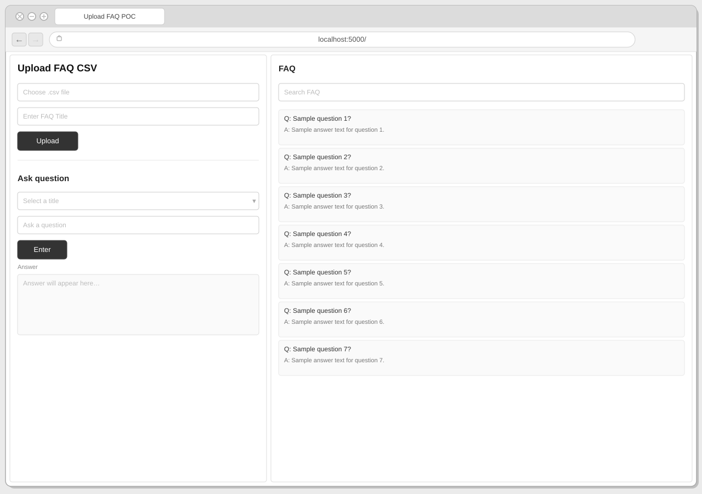
Route: localhost:5000/createQA | Three-panel layout: form, avatar preview, instructions.
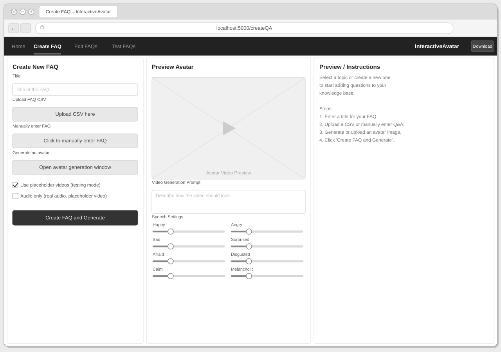
Route: localhost:5000/createQA |
Replaces the simultaneous three-panel layout with a guided four-step wizard
(Topic Setup → Add Q&A → Avatar Config → Review & Save).
A persistent stepper bar shows progress; each completed step can be revisited.
Shown here in Step 2 (Add Q&A): a drag-and-drop CSV zone on the left,
a quick single-pair input on the right, and an inline editable Q&A table below.
Navigation uses "Back" / "Save Draft" / "Next" rather than a single submit button.
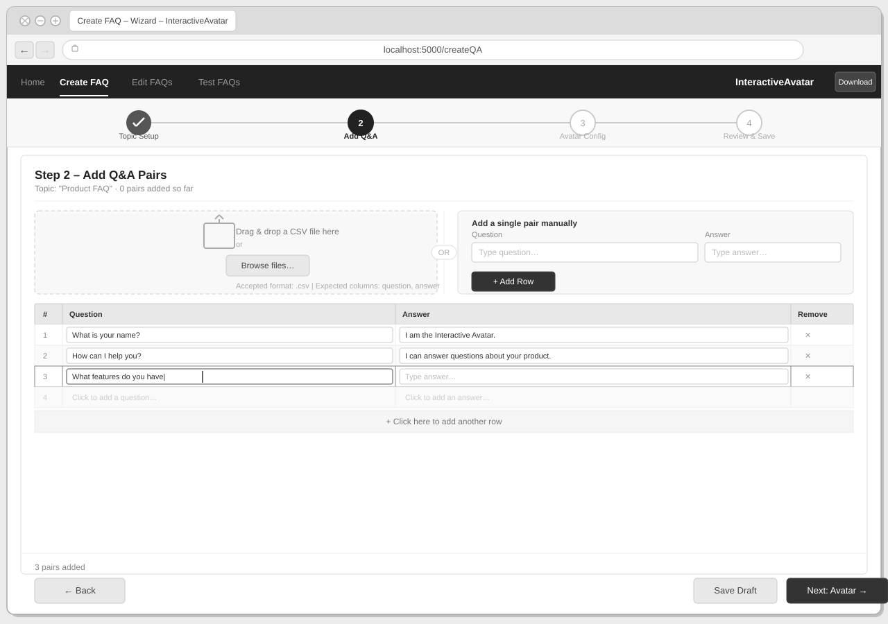
Route: localhost:5000/createQA |
Three panels with a completely different responsibility split from the original.
Left sidebar: topic title, avatar thumbnail with Upload/Generate
buttons, generation-mode radio buttons, and an optional video-style prompt.
Centre panel: the hero element is a spreadsheet-style inline
editable Q&A table — no modal needed; users type directly in each row.
A per-row tone dropdown and a per-row "Gen ▶" button replace the global speech
sliders of the original. A CSV import button sits above the table; a
contextual row menu (Edit / Generate / Delete) appears on overflow.
Right panel: live preview of the currently selected row —
avatar video player, answer text, tone indicator, Re-generate button, and
Prev/Next row navigation.
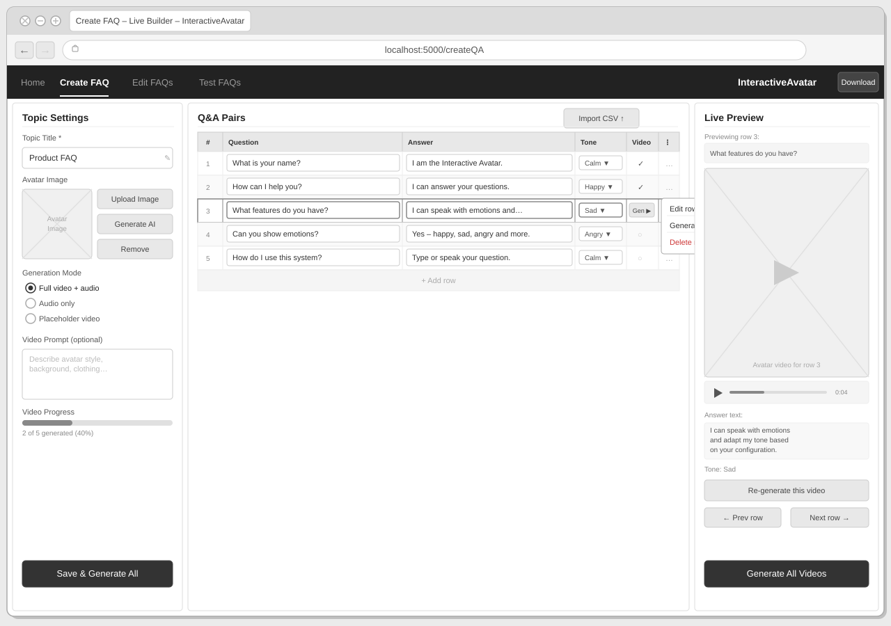
Opened from the "Open avatar generation window" button on the Create FAQ page. Enter a prompt to generate an AI image or upload your own.
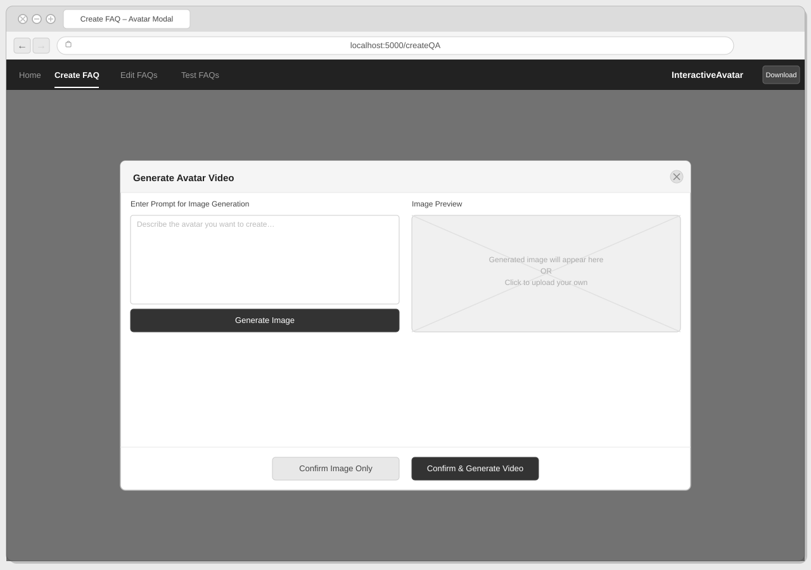
Opened from the "Click to manually enter FAQ" button. Allows adding multiple question-answer pairs by hand.
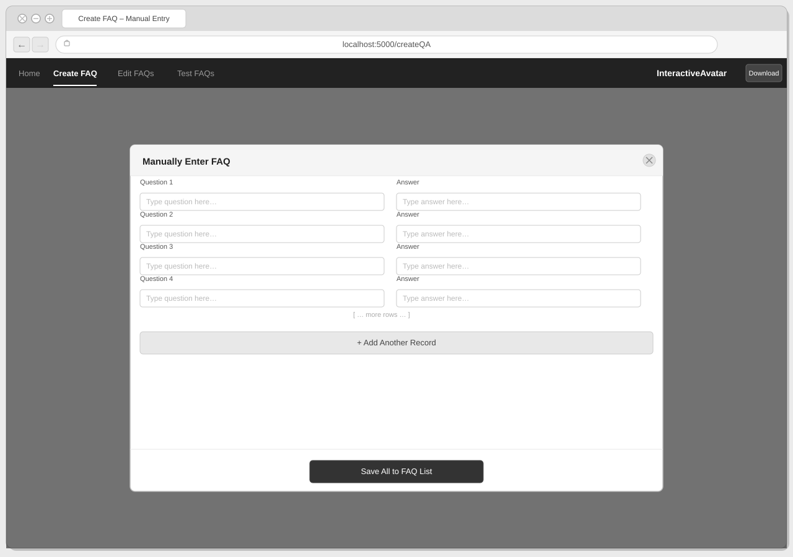
Route: localhost:5000/editQA | Manage topics, edit/delete Q&A pairs, view other-category videos.
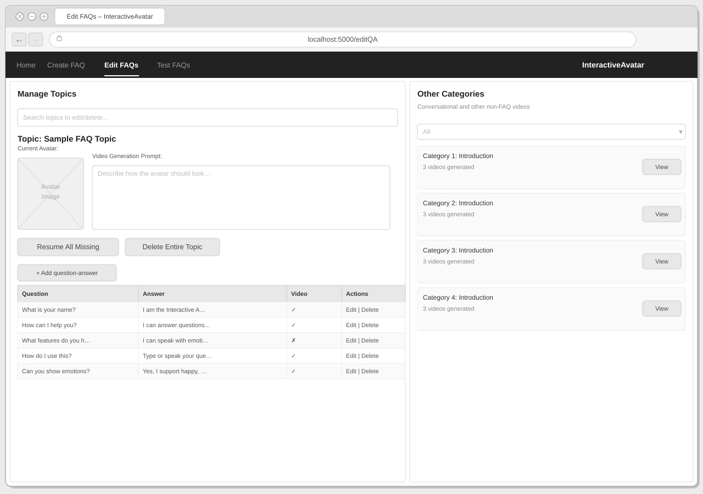
Route: localhost:5000/testQA | Three-panel: avatar video, FAQ table, conversation log.
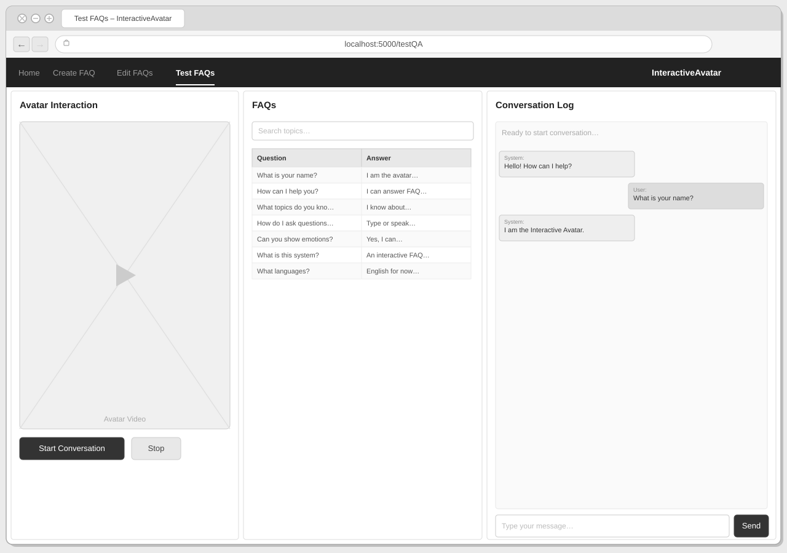
Route: localhost:5000/player | Full-screen avatar video with overlaid controls and chat interface.
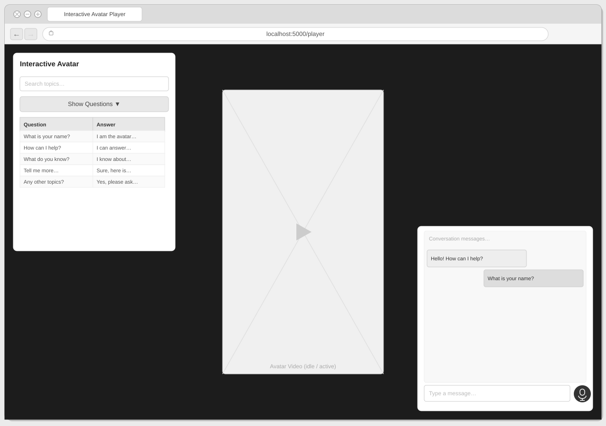
File: playerStandalone/player.html |
Initial screen – prompts the user to upload a ZIP file before the player loads.
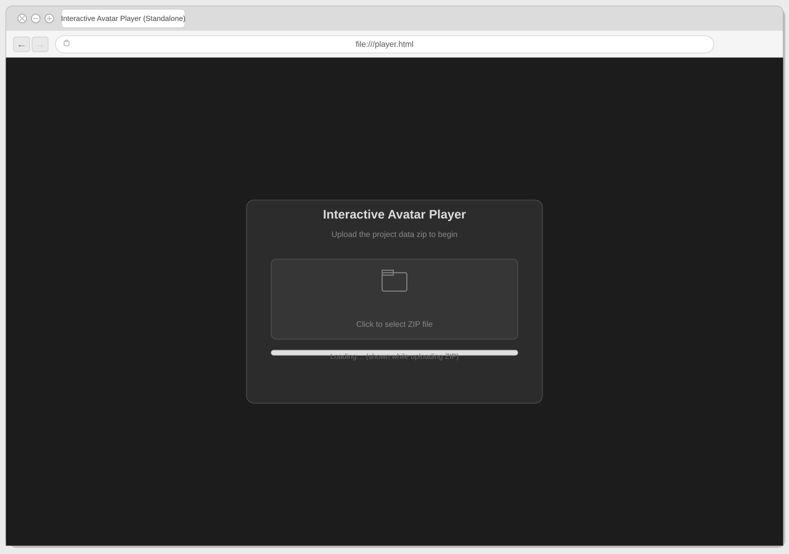
File: playerStandalone/player.html |
After the ZIP is loaded – same layout as the in-app player.
Route: localhost:5000/createQA |
Alternative layout using a 4-step wizard: FAQ Details → Add Questions → Configure Avatar → Review & Create.
Step 1 is shown here with a title field, description, topic/category selector, and a CSV drag-and-drop zone.
A tips panel on the right shows a sample CSV layout.
Navigation is handled by Cancel / Save Draft / Next buttons in a bottom action bar.
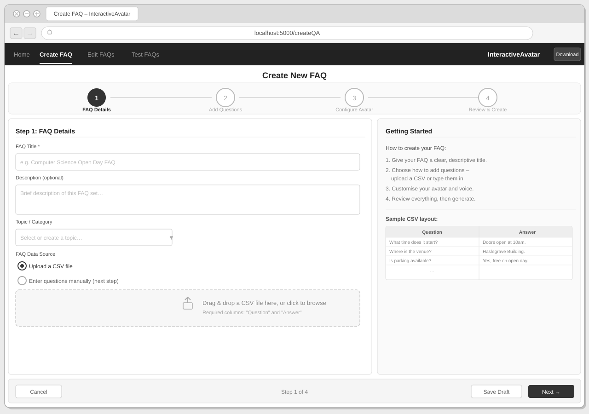
Route: localhost:5000/createQA |
Alternative split-screen layout: a narrow left panel holds all creation controls (title, avatar, tabbed
CSV/manual input, speech-emotion sliders, submit button) while a wide right panel shows a live,
editable Q&A table. Rows can be edited or deleted inline, and new rows can be typed directly
into an add-row bar at the bottom of the table.
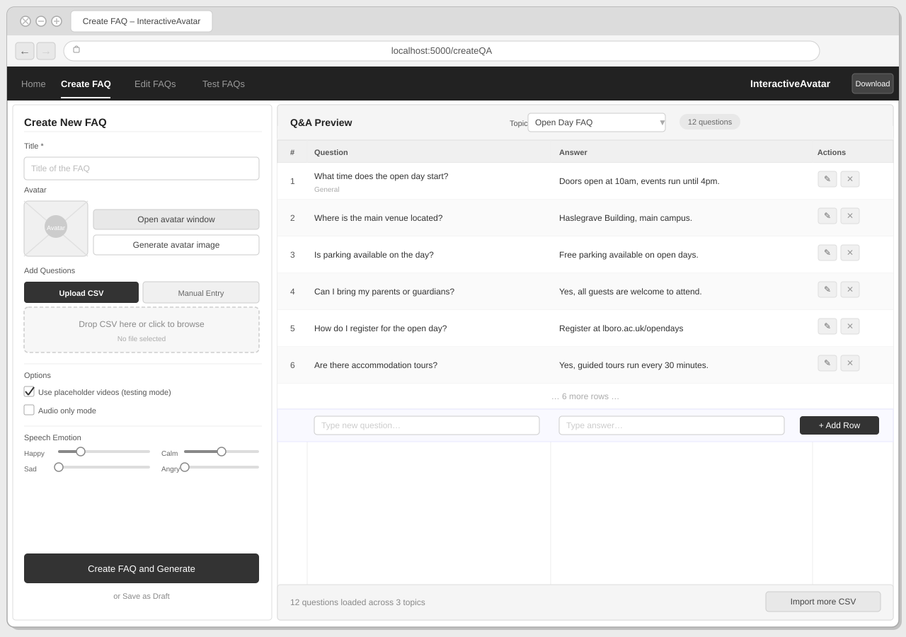